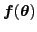
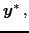
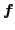
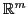
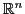
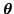
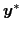
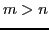
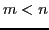

Next: About this document ...
Yasunori Aoki
Cluster Approximation method for Inverse Problems: application to Model Parameter Estimation
Department of Applied Mathematics
University of Waterloo
200 University Ave West
Waterloo Ontario Canada
yaoki@uwaterloo.ca
Ken Hayami
Hans De Sterck
Ben Holder
Akihiko Konagaya
We describe a new method for inverse problems that proceeds by
simultaneously finding multiple solutions of the parameter estimation
problem. Estimation of the parameters of a finitely parameterized ODE
based mathematical model from experimental data is required in many
fields of science. This problem can be thought of as solving a system of
nonlinear equations
 |
|
 |
(1) |
where

is a map from

to

,

is the parameter vector, and

is
the experimental data. A standard approach for solving this type of
system of nonlinear equations is a gradient based method such as the
Newton method or the Levenberg-Marquard method. However, in the case of
finding parameters from experimental data the problem may be more
complicated than just solving (1) in the following ways, and
standard nonlinear solvers may not be adequate:
- There is no guarantee that a solution to (1) exists, nor
that it is unique.
- We often do not have a good initial guess for the parameter value
.
- The experimental data contains a lot of error.
In order to overcome these challenges we have constructed a numerical
algorithm called the Cluster Approximation method that approximately
solves the system of nonlinear equations. This method differs from
traditional nonlinear equation solvers in the following ways:
- It finds multiple possible solutions that approximately satisfy (1).
- It is more robust against local minima of the objective function
compared to other gradient based algorithms since it constructs a linear
approximation from multiple points.
- It is faster than population based stochastic methods as it is a
gradient based algorithm.
Simply put, the Cluster Approximation method combines the desirable
properties of a population based global optimization method (like
semi-global convergence) with properties of gradient based methods (like
convergence speed), as it moves a cluster of tentative solution points
using gradient like information.
We demonstrate these points through solving three different types of
inverse problems in mathematical biology: underdetermined inverse
problems (number of observations smaller than the number of parameters,
i.e., 
), overdetermined inverse problem (number of observations
greater than the number of parameters, i.e., 
), and parameter
identifiability analysis problems (approximating an inverse image of a
set).
Next: About this document ...
root
2012-03-03